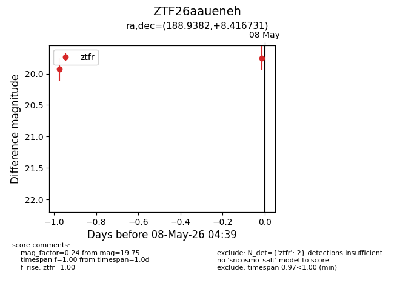
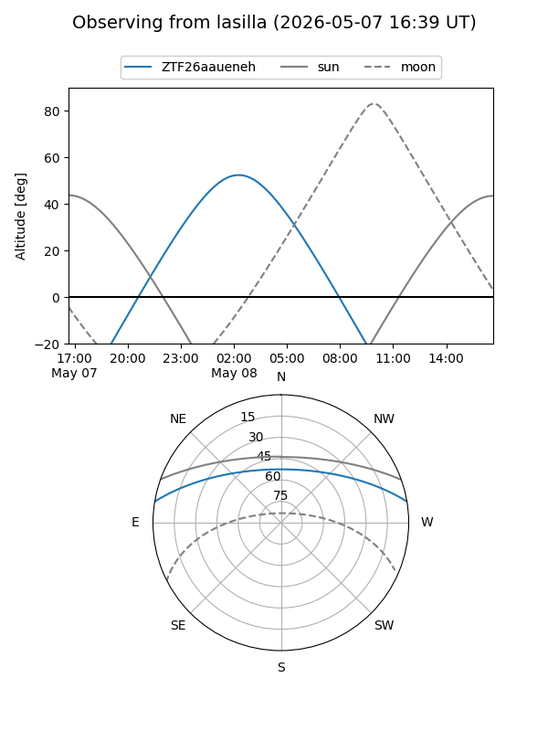
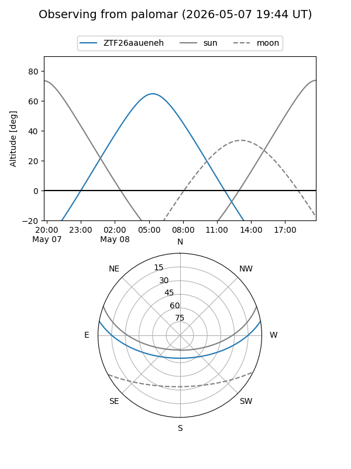

ZTF26aaueneh
Target ZTF26aaueneh at 2026-05-08 04:41
Aliases and brokers:
FINK: link
Lasair: link
ALeRCE: link
alt names
ZTF26aaueneh (ztf,fink_ztf)
Coordinates:
equatorial (ra, dec) = 188.9382,+8.41673
equatorial (HMS+DMS) = 12:35:45.16,+08:25:00.23
galactic (l, b) = (290.9858,+70.92379)
Flags:
Photometry:
last ztfr=19.75
2 ztfr detections
Lightcurve

Visibility


Additional plots